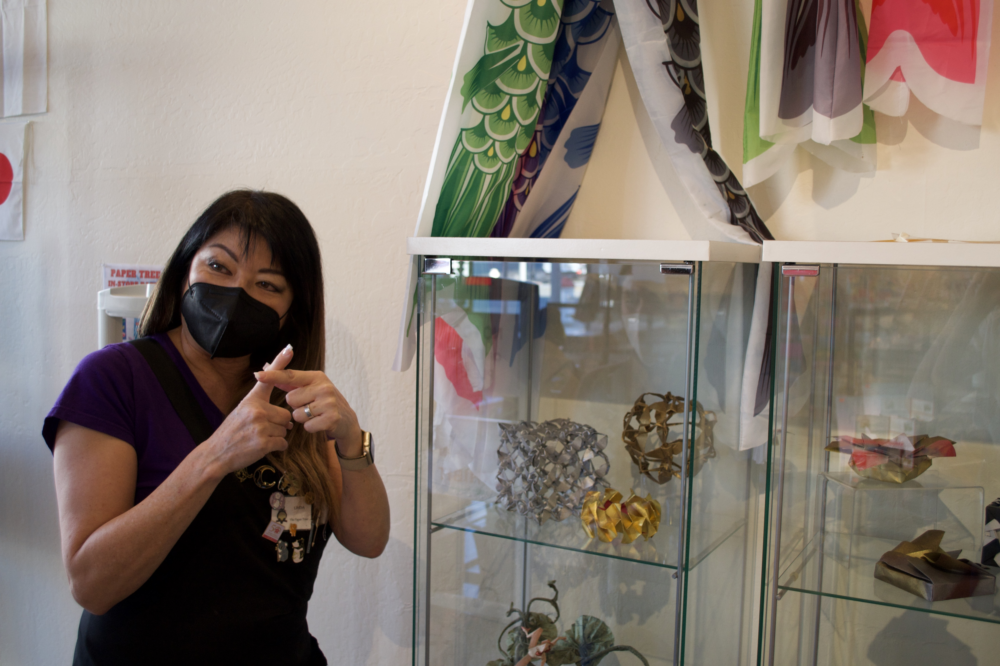
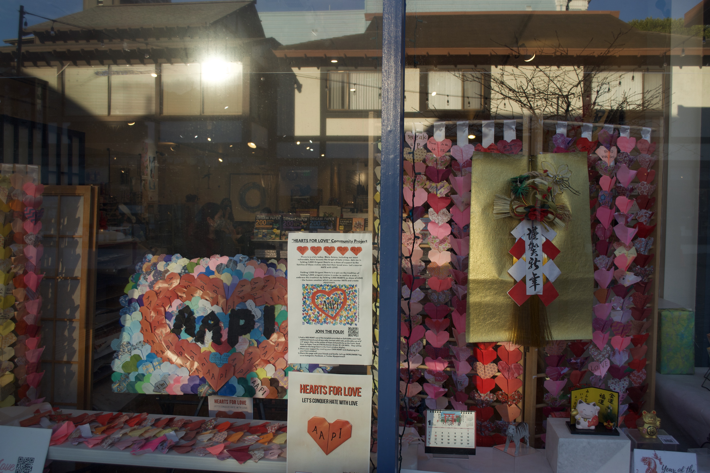

Introducing Origami Ambassador, Linda Mihara
A fixture of Japantown since 1968, Paper Tree is an origami specialty shop just beyond the iconic Buchanan Mall gate.
Every wall of the store is covered with paper – from cat patterned origami sheets to handmade washi paper of Japanese landscapes. Several glass cases feature owner Linda Mihara’s intricate origami, including a white dress with matching shoes in the back of the store.
Taguma sees Mihara and her store as the greatest ambassador for origami.
“They have lessons at their store that bring people into Japantown where they can learn more about culture,” says Taguma. “At Paper Tree, you can actually experience origami, you can actually fold paper.”
Mihara believes that legacy businesses like hers are a crucial part of Japantown’s identity.
“I mean, we're the anchor for Japantown,” she says. “Japantown has identified with these anchor businesses, I really feel that there's nowhere else where you can have that.”
Mihara stands next to some of her origami art pieces (Picture by Yui Ginther.)
When the pandemic began, Paper Tree was considered a nonessential business and forced to close. In order to survive, Mihara expanded her online store and offered free online origami classes every morning on Saturdays.
“While we were shut down, I did a thing with my windows – I noticed everybody was using their phone to do orders and stuff like that – so I put QR codes with all the merchandise in my front windows so they can scan and buy, and we can ship,” she explained. “That was happening before we got to open our doors to the public. So you have to be creative as a business owner and try to figure out a solution.”
Rosalyn Tonai, long-time customer and executive director of the nearby National Japanese American Historical Society, credits Mihara’s creativity for what Paper Tree offered the neighborhood during the height of the pandemic.
“It was one of the few stores that could work with clientele, and provide a little hub of activity in the community,” Tonai says. “Her hearts project started off to commemorate the lives that were lost and give hope to the healthcare workers that were having to deal with the pandemic. That's a wonderful project that everyone can be involved in.”
